Hike: Land’s End
Difficulty: Easy to Moderate
Hike Time: approx. 2 hrs
You may find it bemusing that the first hike I am recommending is actually within San Francisco city limits! Or you may believe it to be surreptitious sponsorship by the city of San Franscisco :). Make no mistake—I will take you along many a trail in the North, South, and East Bay as well as the coast, in due time. But when you have sweeping views of the ocean, a clear shot at the Golden Gate, a wooded hike, and the chance to see European art and dine on all manner of ethnic food, that makes my cut for something hard to miss! This post will focus on the hiking portion, but definitely look to your favorite guide book or review site for additional local spots!
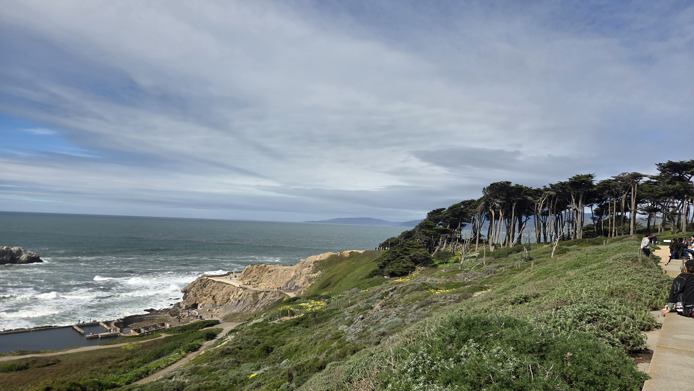
Sutro Baths
Self-made millionaire Adolph Sutro designed a massive bathhouse in 1894, along with the Cliff House and a local park. This structure was meant to offer a welcome respite and for San Franciscans to take a dip. A decadent Greek entrance adorned the aquatic facility, which included slides, trapezes, and a high dive at the time. The tides brought in an approximate 2 million gallons of seawater for swimming and wading, and up to 10,000 people could swim at once! It was also somewhat of a podium for local concerts, talent shows, and cook-offs. Before catering to start up entrepreneurs, this windswept end of the earth gave way to a family-friendly resort with views to die for. A fire in 1966 unfortunately destroyed this modern marvel worthy of a World’s Fair.
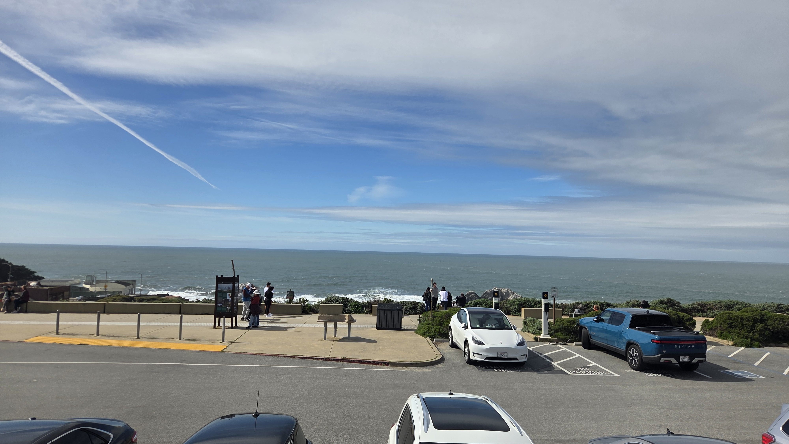
Today, you can tour the remains of this piece of San Francisco history, the whole of which (adjacent land included) was revamped by the National Park Service in 2006, who added a visitor center and several trails. Today we will hike the Coastal Trail.
It is recommended you start the trail at the Baths. Even the parking lot on Pt. Lobos Ave. offers some nice initial views.
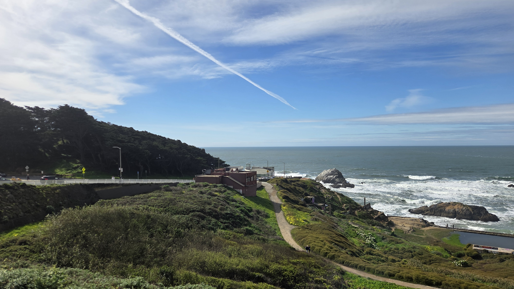
From the visitor center, make your way down the steps towards the large pool (as mentioned above, not much of the baths is left). Still, you can find some standing vestiges among the elevated pool. There are columns, bathhouses, and what was once known as “the aquarium” (a massive tide pool). Be sure to enjoy breathtaking views of the oceanfront and rocky shore while at the water’s edge.
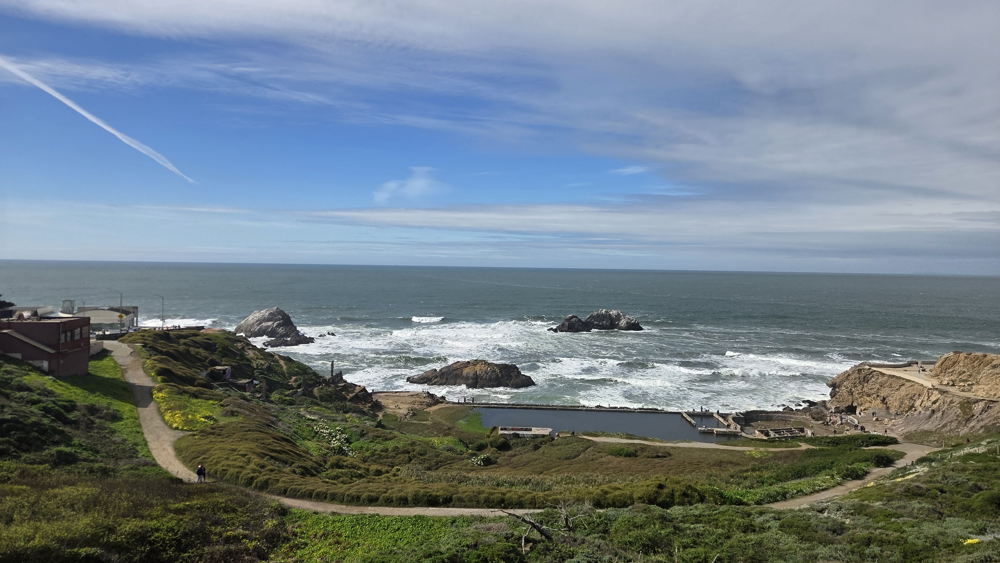
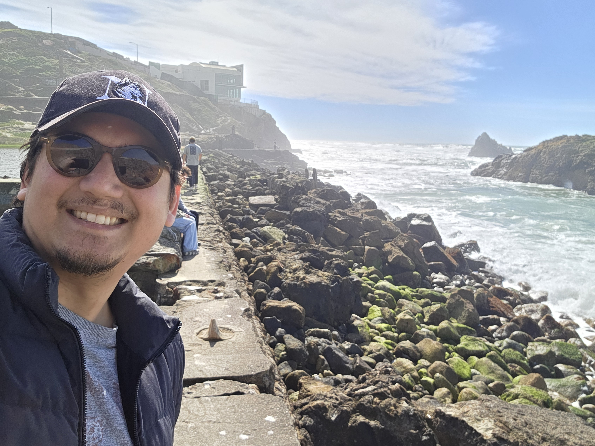
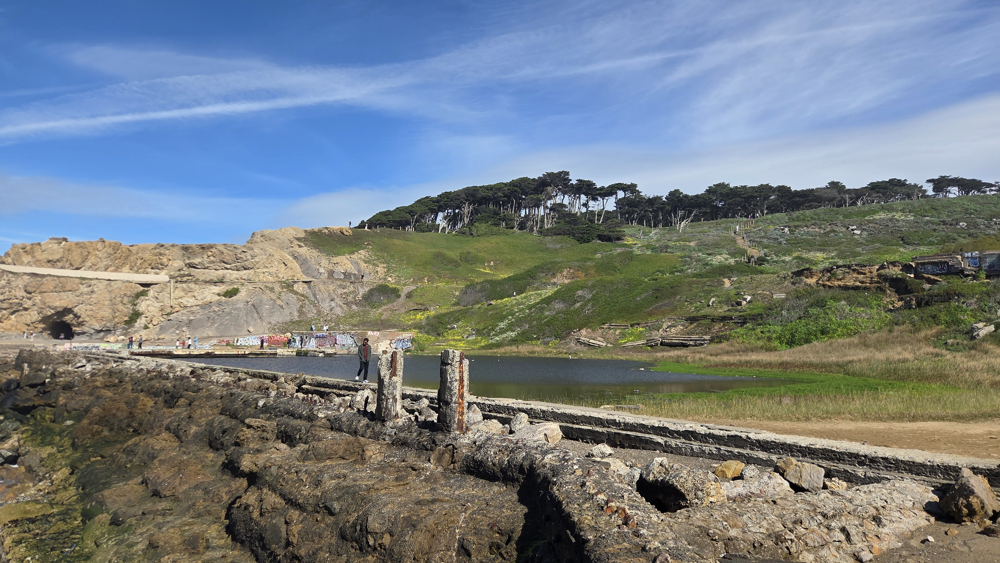
After you’ve gotten your fill, head towards the wooded area back up the hill near the parking lot. You’ll enter a grove of trees with a dirt footpath that climbs a bit but remains fairly moderate. Hang left at the fork, and if you prefer, you can make a hairpin turn at the Land’s End Lookout down a hill to see Mile Rock Beach. The beach was not particularly enthralling, but is a nice sandy break in your journey (but if you want to spend time at the beach, you’re probably better off heading to Ocean Beach once you’re done).
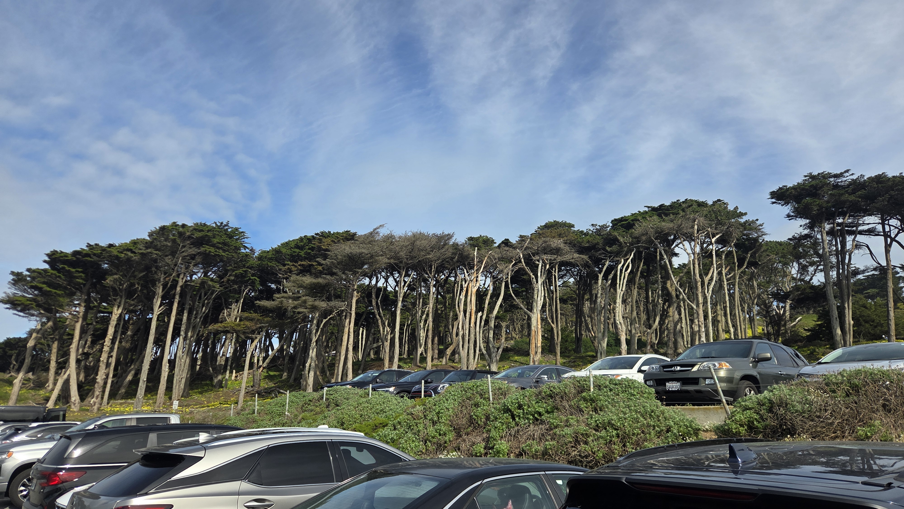
You’ll enjoy many views of the Golden Gate Bridge along your path, ending a one way trip after about 2.7 miles at the Legion of Honor. This museum is a replica of the original palace in Paris. Inside, the prints alone number at over 90,000, and that does not include the extensive collection of sculptures, minted coins and metals, and porcelain. If you enjoy European art, this is definitely a place you don’t want to miss. There is also a nice café and gift shop in the museum if your wanderings have made you weary or a tad spendthrift.
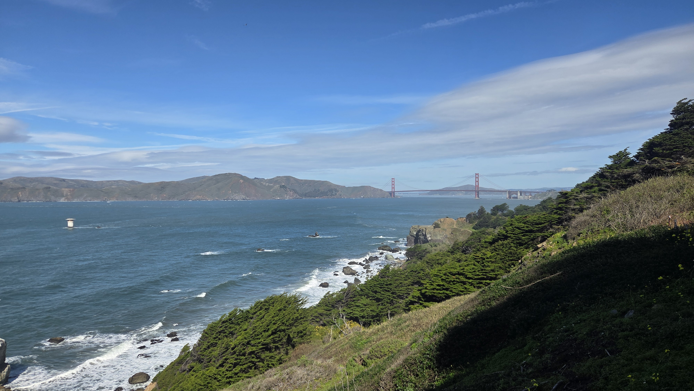
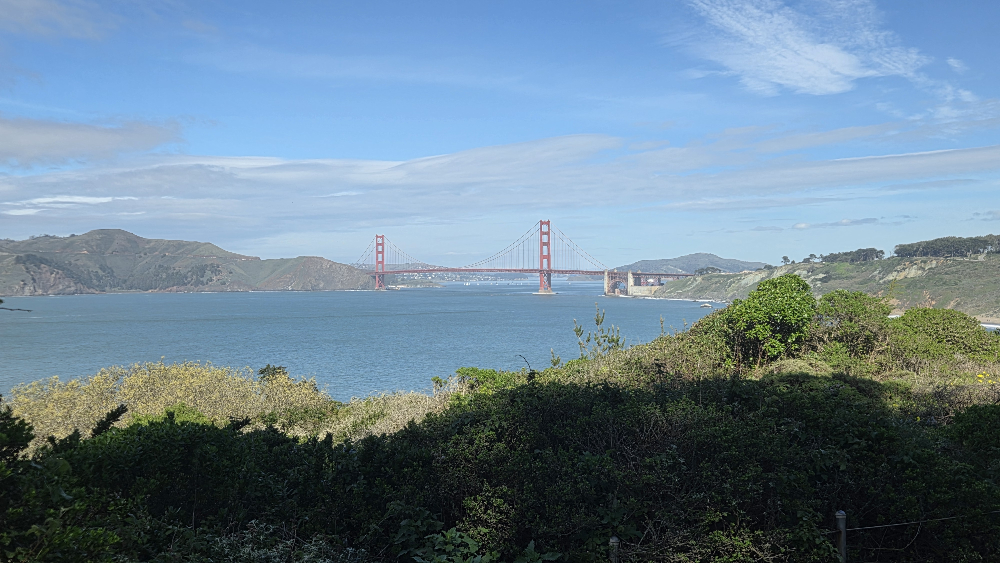
From there, you’ll head back the way you came to get back to the parking lot. The trail offers a nice new view in the other direction, and I encountered quite a few runners, locals, and foreign tourists alike. The area can be heavily trafficked on weekends. Coming early might be your best bet to beat the crowds.
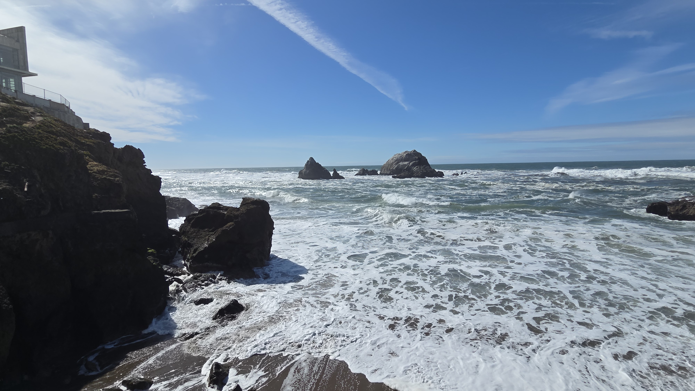
Have a look at the tourist center to chat with the park rangers, read up on history, or have a look at the refreshingly tasteful wares! There are mugs, sweatshirts (beware Karl the Fog), and local artisan goods for sale. Following that, Ocean Beach is right up the way, at less than maybe a mile down the road. If it’s fall, you’ll be in bonfire season, but regardless of the time of year, the long stretch of white sand is a wonderful escape from the busy city life we likely all know too well.
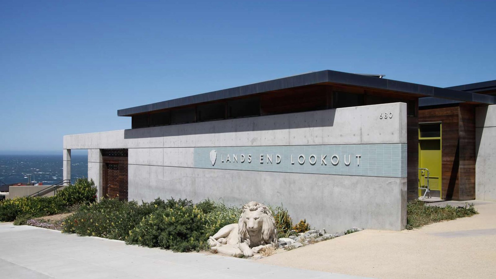
The Land’s End Visitor Center - Photo Credit Ayuchi Haga Sandlin
Until the next adventure!
---
Looking for my professional site?
A more challenging hike?
Or perhaps some more San Francisco
Or maybe the rest of The Break Room
Leave a Comment